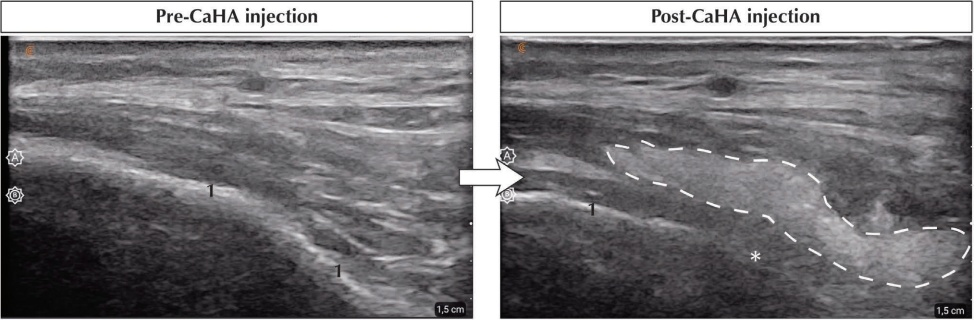
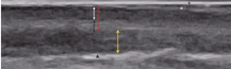
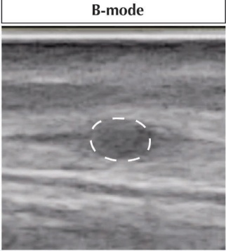
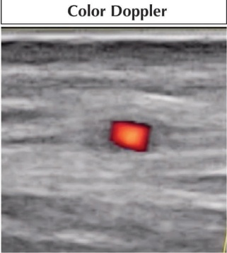
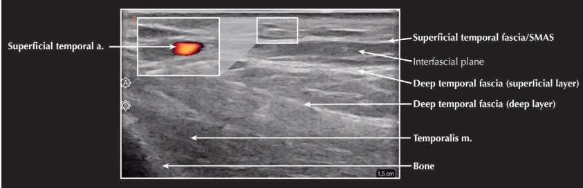
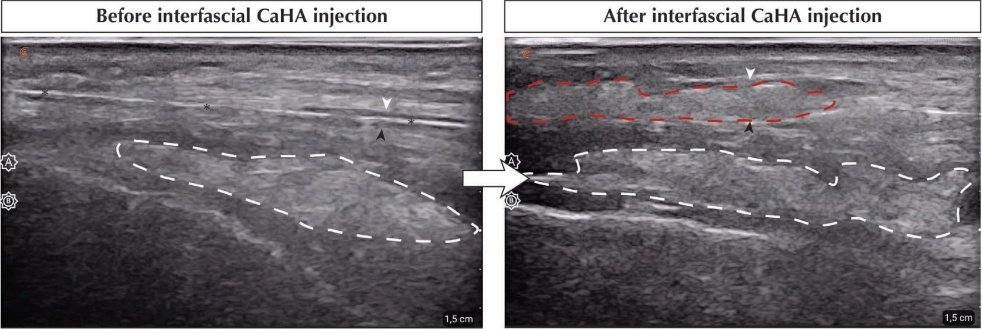

44 CaHA治疗的超声检查与并发症
超声检查 CaHA 治疗和并发症
AINA CERVERA-BAREA, TOM DECATES, LEONIE W. SCHELKE, PETER VELTHUIS, AND JANI VAN LOGHEM
44.1 超声成像在 CaHA 填充剂治疗中的适应症
近年来，超声技术在日常面部美容实践中的应用被证明是绘制潜在结构（血管、肌肉、深层和浅层脂肪、骨膜、腺体等）并指导软组织填充剂注射的宝贵工具 [1]。经验丰富的临床眼光对于辨别面部结构至关重要，但选择探头和控制图像优化的设置同样相关 [2]。
面部美容可采用紧凑的“曲棍球棒”探头，这有助于更好地接近活动和难以触及的面部区域，实现与皮肤表面的完全接触，从而减少皮肤散射伪影，例如各向异性效应 [2,3]。国际工作组 DERMUS 在皮肤超声学领域拥有丰富的专业知识，联合欧洲超声医学与生物学联合会（EFSUMB）和由 15 位国际专家制定的改良德尔菲共识，强烈推荐在皮肤美容应用中使用高频探头（例如 10–15 MHz）[4–8]。现代超声探头内置了宽带宽功能，可在不同深度产生清晰、可调节的图像，并能分辨浅表血管模式和真皮下结构的细微特征 [2]。高变量频率超声（HVFUS）探头的范围为 6–18 MHz，彩色多普勒频率范围为 4 至 7 MHz [3]。这种广泛的频率范围使得可以在高频（14–15 MHz）观察皮肤层或在低频（6–13 MHz）观察更深层的组织 [3]。
使用实时超声技术促进了安全应用和精确注射的双重作用，以确保理想的结果。作为一种钙基填充剂，CaHA 反射声波的方式与其非合成对应物 HA 不同（表 44.1）[9]。在治疗前阶段，当 CaHA 注射到高风险区域时，超声介导的治疗规划变得重要（表 44.1）[10]。在美容干预过程中，实时超声可帮助医生定位锐针/钝性套管针并在所需的解剖层次（真皮、皮下、层间或骨膜上）沉积 CaHA。当可能发生血管闭塞时，频谱多普勒监测尤其有用，并且可以进行现场调整以确保患者安全（表 44.1）[2]。在治疗的后期阶段，超声还被建议用于监测变化和处理过度矫正、脱位或血管不良事件（表 44.1）[11]。在某些情况下，可能需要溶解填充剂以预防即将发生的填充剂诱导的皮肤坏死（即使用透明质酸酶溶解 HA），而超声引导似乎能显著提高完全恢复并最小化瘢痕形成的几率 [12]。日常美容实践中超声引导的优势和适应症总结见表 44.1。
| 治疗前 | 治疗中 | 治疗后 | 参考文献 |
| • 记录平面宽度（皮下或深层脂肪/SMAS 层间/骨膜置入的浅表脂肪层）。 • 评估高风险区域的血管情况。 • 为经验不足的注射者提供“感受”注射平面的教育工具。 | • 注射的实时引导。 • 确认填充剂沉积在特定解剖水平。 • 定量估计血流以避免血管闭塞。 | • 沉积的填充剂可视化。
• 用生理盐水稀释 CaHA 的超声引导。 • 诊断和监测并发症。 | [3,12–17] |
44.2 皮肤超声检查中的常见陷阱
根据目前的报告，我们认为皮肤超声检查过程中常见的陷阱源于（经验不足的）操作者、超声检查所使用的设备，以及选择进行成像的参数或设置。解剖学或临床知识的缺乏、培训不足和对检查结果的误读是导致操作者陷阱的原因 [18]。源自设备的陷阱通常与使用低频探头有关（<15 MHz），尽管如今美容诊所常用的超声设备可达到高达 20 MHz 的频率。根据一些作者的建议，变频换能器在空间分辨率和深度之间提供了最佳平衡，同时可以生成所有皮肤层和结构的清晰图像 [19]。如果没有前述探头，有人提出，当可视化浅表皮肤层（表皮和真皮）以及（稀释的）CaHA 引起的后声影（PAS）伪影时，拥有两台设备会很有帮助，一台可达 24 MHz，另一台用于高频超声（高达 70 MHz）[7,20]。此外，与成像软组织所需的少量凝胶相比，大量使用凝胶也有助于超声识别皮肤结构 [7,21]。源自方法的陷阱可能导致伪影可视化（超出图像处理固有的伪影），并可由错误选择的图像模式或参数，或缺乏可以提高图像质量和工作流程效率的定制预设引起 [2,18]。一个成像不足的例子是探头倾斜角度不当（应为 ≈90° 而非 ≤60°），这可能导致血栓误诊而不是正常血流检测 [18]。其他需要进行超声优化的参数调整包括有助于对比度增强的增益校正和焦距调整 [2]。全面理解和操作超声设置对于达到最佳图像质量是不可或缺的。
44.3 CaHA 的超声特征
作者描述 CaHA 沉积物为高回声带，这些带子会反射大部分声波，且随时间不改变，由于钙颗粒产生 PAS 伪影（图 44.1 和表 44.2）[22,23]。相比之下，HA 表现为随着时间减小的无回声假囊肿 [9]。重要的是，不同配方的 CaHA 会产生不同程度的 PAS。在一项回顾性研究中，Wortsman 等人证明了未稀释的 CaHA 与稀释后（1:1 至 1:6）的轻度 PAS 相比，具有较强的 PAS 效应 [20]。在稀释配方中，当切换到高频探头（70 MHz）时，这些伪影更明显，而在含有 HA 的混合配方中，PAS 占 0% [20]。
44.4 皮肤层次及皮肤邻近结构的超声评估
皮肤是超声检查易于接近的器官。然而，其形态和功能上的复杂性使其成为一个难以成像的结构。超声成像可将皮肤分为最外层的表皮、中间层的真皮以及更深层的皮下组织。为了解皮肤及邻近器官的解剖差异，下面将讨论健康面部结构的不同超声表现，以及应用于 CaHA 填充剂治疗的超声检查方案。

| 组织填充剂 | 回声性 | 质地 | 形状 | 发现 | 持续时间 | 参考文献 |
| 羟基磷灰石钙（CaHA） | 高回声的 | 粗颗粒降雪 | 带状的 | 因钙成分引起的后声阴影伪影 | 常数积 → 随时间无变化 | [11,22,24,25] |
| HA | 无回声的 | 沉积时均匀 → 组织整合后不均匀 | 椭圆形（假囊肿） | 无内部回声征象（与利多卡因混合制剂可见内回声） | 随时间推移减少 |
44.4.1 表皮层
表皮层包含四层表皮（角质层、颗粒层、棘层和基底层），是皮肤的最外层，厚度通常根据区域不同，范围为 50–120 μm。角质层是一种无细胞结构，含有角蛋白和脂质，具有较高的回声特性。在非光滑皮肤和因此角化程度较低的区域，表皮层表现为一条单层高回声线（图 44.2）[19,26]。相反，在高度角化的区域，例如掌部和跖部的厚实、光滑皮肤，则观察到双层高回声结构（表 44.3）[19,26,27]。这一外层通过弥散机制获得营养 [28]，利用了表皮-真皮交界处；因此，使用彩色多普勒超声无法显示任何血流。

44.4.2 真皮层
皮肤的中层是真皮层，其中有有组织的胶原束提供机械功能，并代表了表皮的细胞外基质 [26]。需要注意的是，真皮层由两层组成：浅层的乳突状真皮和深层的网状真皮（图 44.2）。与表皮不同，真皮层——特别是网状真皮层——也穿行着复杂的血管系统（以及其他皮肤结构和附属器）。乳突状真皮层由源自深层真皮的类似烛台的丛状网络提供的浅表血管毛细血管供血。后者还包含动脉-静脉吻合处，有助于血液绕过上方的水平真皮血管。在皮下注射过程中，特别是在真皮填充剂沉积时，可能会出现轻微出血。彩色多普勒超声检查可以了解人体内的实时血流运动情况。在美容学中，了解血管模式并避免意外的血管注射尤其重要。然而，一些作者指出，由于需要至少 2 cm/s 的血流速度才能检测到，并且只有在存在真皮异常时才会发生这种情况 [29]，因此真皮层的血管性不一定能在彩色多普勒上普遍检测到。其他人甚至推测了检测机制，提出浅层真皮层中更多的血红蛋白分子可能会屏蔽深层血红蛋白分子，从而削弱较大穿透深度处的信号 [26,30]。
就重塑而言，由于大部分胶原沉积于此，主要是 I 型和 III 型，因此真皮层也是给药羟基磷灰石钙（CaHA）的理想区域。这里的结缔组织更致密，但弹性纤维较少，使其在维持机械力和防止皮肤松弛方面发挥着关键作用 [26,31]。健康真皮层的超声评估默认表现为与胶原成分直接相关的高回声带（表 4.3）[26,31]，并且通常发现乳突状真皮和网状真皮之间没有超声学差异（表 4.3）[32]。然而，营养性改变
然而，皮肤的营养性改变可能影响回声征象。事实上，De Rigal 等人描述了老年个体在慢性日晒后真皮层内存在额外的亚表皮低回声带（SLEB）[33]（表 44.3）。这一证据使许多作者提出将 SLEB 作为皮肤衰老参数 [34]，其厚度随年龄增加而增加 [33,35]。其他研究人员仍报告称，SLEB 厚度与年龄之间没有直接相关性，它更多地与真皮萎缩有关，而非 SLEB 的扩张 [36]。无论如何，SLEB 仍然是受损皮肤的超声征象和羟基磷灰石钙（CaHA）治疗的目标。
44.4.3 皮下或真皮深层
皮下间隙由脂肪组织组成，该组织分为小叶 [26]。每个脂肪小叶由包含纤维和血管成分的纤维血管隔分隔开（图 44.2）。隔膜的纤维成分由胶原和网状纤维组成，而血管部分含有供应血液的动脉和一个引流真皮深层的静脉-静脉系统。氧合血通过一个小的肌肉动脉（直径 250–500 μm）从隔膜输送，该动脉分支成中央小叶动脉（直径 100–300 μm），并进一步形成毛细血管，分别包裹和滋养每个脂肪细胞 [26]。皮下层的首要超声征象是低回声，其中穿插有与隔膜对应的高回声带，将小叶分隔开（表 44.3）。
在皮下组织中，孤立的血管 <1 mm 可作为细小的无回声管状结构轻易可见，其排列具有临床意义，特别是在发生闭塞时（图 44.3 和表 44.3）[3]。动脉干扰与弥散性小叶内改变（主要是小叶皮下炎）有关，而静脉闭塞则表现为间隔和间隔旁改变（主要是间隔皮下炎）[26,37]。
44.4.4 SMAS 与深筋膜
SMAS是一个有组织的连续纤维网络，负责将肌肉与真皮连接，它与深筋膜一起属于皮下层（图 44.4）。研究发现，SMAS在中面部存在不连续性，而在太阳穴处，它与浅颞筋膜是连续的 [38]。向颞上缘和前额移动时，颞筋膜与帽状腱膜相延续，而帽状腱膜是 SMAS 的纤维肌性延伸 [39]。不同时期描述了不同的SMAS [40]，但在本章中，我们将采用Zattar等人关于填充物面部再生的五种SMAS类型描述（表 44.3）[41]。这五种形态学上的SMAS也表现出区域性的不同超声反应，这些反应将在后续定义。I 型属于腮腺前区，富含脂肪，使其呈现低回声伴高回声的垂直隔，类似于V型SMAS和其他身体区域的皮下组织。II型描述为异质性高回声皮下层，真皮-皮下交界处缺乏清晰的界限。III型可在上下眼睑发现，其特征是该区域较薄、脂肪含量低，呈现出高回声特征。颞区和腮腺区属于 IV 型 SMAS，显示出与皮肤平行的、呈高回声的水平线。Zattar等人还在颈部区域描述了V型SMAS。这种类型具有明显的低回声皮下层，除了连接皮肤与颈阔肌的垂直纤维隔外，还具有平行于皮肤的纤维隔 [41]。


羟基磷灰石钙软组织填充剂
在太阳穴区域，我们还能找到浅颞筋膜层和深颞筋膜层之间的筋膜间隙（图 44.4 和表 44.3）[42]。该区域在灰阶超声下呈低回声，并被源自筋膜层的高回声带所包围 [42]。筋膜间隙是颞部丰容的靶点（图 44.5），特别是当强力收缩的肌肉（即颞肌）穿过该区域时，深层填充可能会引起产品移位或结节形成 [39]。
除了 SMAS 层外，在深真皮层还存在深筋膜（也称为中间筋膜）[39]，它连接着皮下组织和肌肉（图 44.4 和表 44.3）。这层致密的结缔组织片呈高回声带，也被认为属于填充浅筋膜和更深结构之间空间的较厚的纤维脂肪层 [43]。深筋膜的厚度取决于其穿行的区域而不同，在凹凸底下的结构中，它在凸部是薄且汇合的，在凹部则是厚且发散的，形成深层脂肪实体 [43]。
44.4.5 肌肉
在面部超声检查过程中，使用高频换能器时可以观察到肌肉（图 44.4）[44,45]。骨骼肌表现为低回声的纤维状结构，根据其收缩状态呈现动态变化 [29]。肌肉排列成由称为筋膜（perimysium）的高回声脂肪-纤维隔膜分隔的梭形结构，在纵向上可见为高回声线性带（表 44.3）[26]。肌肉包含在一个称为


| 皮肤结构 | 回声度 | 频率 | 超声方案 | 参考文献 | |
| 表皮层 | 非手掌皮肤 | 高回声层 | 75-100 MHz | B 模式灰阶 | [3-6,18,29,56] |
| 手掌和足底皮肤（Glabrous skin） | 双层高回声层 | ||||
| 真皮层 | 乳突或浅表真皮 | • 健康：高回声 • 电纹性改变（Elastosis）：真皮下低回声带（SLEB） | 20-30 MHz | B 模式灰阶 | [3-6,18,29,56] |
| 网状或深层真皮 | |||||
| 皮下/皮下组织 | 脂肪小叶 | 低回声 | • 浅表皮下：12-17 MHz • 深层皮下/肌肉：7.5-12 MHz | B 模式灰阶 + 彩色多普勒 | [18,19,26] |
| 纤维血管隔 | • 纤维：高回声 • 血管：无回声管状 | ||||
| SMAS | 血管 ≥ 300 μm ∅ | 无回声管状 | 12 MHz | 彩色多普勒 | [57-60] |
| - 100 μm ∅ | 18-22 MHz | ||||
| 颈部和面部（Preparotideal）（I 型） | • 皮下：低回声 • 垂直隔：高回声 | 15-33 MHz | B 模式灰阶 | [41,61] | |
| 颏部和唇（Chin and lip）（II 型） | • 皮下：异质性高回声 • 丢失真皮-皮下交界线 | ||||
| 上眼睑和下眼睑（Lower and upper eyelid）（III 型） | 高回声细线 | ||||
| 颞部和腮腺区（Temporal and parotideal）（IV 型） | 高回声水平线（与皮肤平行） | ||||
| 颈部（Cervical）（V 型） | • 皮下：低回声 • 平行和垂直隔：高回声 | ||||
| 筋膜 | 浅筋膜和深筋膜层 | 高回声带 | 10-18 MHz | B 模式灰阶 | [42,61,62] |
| 筋膜间隙 | 低回声 | ||||
| 肌肉 | 肌肉 | 低回声 | 10-15 MHz | B 模式灰阶 | [3,44,45] |
| 结缔组织（骨膜和筋膜） | 高回声带（纵向平面） | ||||
| 骨膜 | 骨膜 | • 健康：不可见 • 病理/骨膜反应：低回声增厚 | 10-15 MHz | B 模式灰阶 + 彩色多普勒 | [44,49] |
| 血管 | • 健康：彩色或功率多普勒阴性，但可检测到营养动脉 • 病理/骨膜反应：彩色多普勒可能出现充血 | ||||
∅，直径。
| 并发症 | 涉及的面部结构 | 回声性 | 发现 | 超声检查方案 | 参考文献 |
| 早期并发症（注射后前 24-48 小时内） | |||||
| 血管闭塞 | 面部动脉如面动脉、角动脉、背侧和翼部鼻动脉、额前和额后筛窦动脉、眼神经动脉或唇动脉的闭塞 | N/A | • 缺血、失明、黏膜或真皮坏死* • 高血管性湍流动脉或有无可检测的填充剂阻塞的可见血流缺失 | B模式灰阶+彩色多普勒 | [14,63,64] |
| 水肿 | 皮下脂肪炎症，淋巴积血 | • 真皮层：回声度 • 皮下组织：回声度 | 脂肪小叶间无回声带（重度期） | B模式灰阶 | [65,66] |
| 晚期并发症（注射后四个月） | |||||
| 慢性炎症 | 真皮和注射区域的皮下组织 | • 真皮层：回声度 • 皮下组织：回声度 | 区域性高血管化伴低流速血管 | B模式灰阶+彩色多普勒 | [63] |
| 非感染性结节/肿块† | 注射区域 | 局灶性沉积可表现为高回声沉积 | • 受压后无改变 • 血管丰富程度不一 | B模式灰阶+彩色多普勒 | [22,67-69] |
| 皮下炎 | 注射区域的皮下层 | • 小叶状/“雾状”模式：回声度增加 + 弥散且明亮的模式 • 隔膜状/“鹅卵石”模式：回声度的小叶 • 混合模式：回声度的小叶 + 隔膜 | • 小叶状：低血供/高血供 • 间隔：低血供/高血供 | B模式灰阶+彩色多普勒 | [63,65] |
| 硬皮病样反应 | 注射区域 | • 真皮层：回声度 • 皮下组织：回声度 | • 真皮-真皮浅层交界不清 • 真皮和/或真皮浅层过度血管化 | B模式灰阶+彩色多普勒 | [63,70] |
N/A，不适用。*眼眶、鼻部和鼻唇区域血管闭塞的后果。†可由局灶性填充剂积聚、可吸收和不可吸收填充剂相互作用（过度矫正）和/或炎症反应（继发性皮下炎或肉芽肿反应）引起。
筋膜。筋膜和深筋膜均表现为高回声带 [46]。有趣的是，在健康静息肌肉中看不到血流；因此，彩色多普勒或功率多普勒模式将无用（表 44.3）[46]。超声检查骨骼肌可能具有挑战性，当肌肉组织特性和回声度根据病理生理因素（例如体重、纤维化含量增加或年龄）发生变化时，必须调整系统设置 [45]。
44.4.6 骨膜
骨膜沉积是实现提升、抬升效果最远可达的深度。一些作者甚至将其称为深筋膜 [47]，当深筋膜和骨膜连续化时 [39]。骨膜是提供骨骼血管化的外层纤维膜，紧邻下方的皮质骨，其厚度与年龄呈反比关系，随着年龄增长逐渐变薄（表 44.3）[48]。在正常情况下，成人超声无法将骨膜识别为独立的结构 [44]；仅可见骨表面呈高回声线状，伴有PAS和一些混响伪影（图 44.4）[49]。相反，在儿童中，可以观察到，但表现为位于高回声皮质骨上方的薄的低回声带 [48]。多普勒信号也用于肌肉骨骼超声成像，尽管健康的骨膜不显示血流，但穿透骨膜的动脉进入骨内时可以被检测到（表 44.3）[48]。
44.5 CaHA 并发症的超声可视化
在随访过程中，超声也可用于评估患者并发症及其治疗，例如在使用超声辅助进行经皮溶栓治疗（HA）时，处理意外血管内注射的情况 [50]。可能的并发症可按发病时间（早期至晚期）或严重程度分类；范围从局部水肿到色素沉着；并且可能模仿常见的皮肤病，如硬皮病（表 44.4）[51]。其中一些并发症取决于操作者，例如导致结节的浅表沉积物或威胁患者安全的血管闭塞。肌肉注射的结果——尤其是在口周结构等高度活动区域——也可能通过填充剂从细丝状形成团块而引起结节的形成 [52]。血管闭塞引起的严重副作用可能导致视力丧失甚至中风，使超声检查成为管理和潜在预防血管闭塞的有益工具 [53–55]。CaHA 治疗后最常见的并发症及其相关的超声征象总结可参见表 44.4。如需更全面的填充剂并发症了解，请参阅第 45 章。
参考文献
[1] M. Calomeni et al., “Precision of soft-tissue filler injections: An ultrasound-based verification study,” Aesthet Surg J, vol. 43, no. 3, pp. 353–361, 2023.
[2] K. Malherbe, S. Roberts, “Sonographic principles and techniques,” in: Ultrasound Protocol for Facial Aesthetics. Springer, 2024, pp. 5–23.
[3] D. Gaitini, “Introduction to color doppler ultrasound of the skin,” in: Wortsman, X., ed., Dermatologic Ultrasound with Clinical and Histologic Correlations. Springer, 2013, pp. 3–14.
[4] X. Wortsman et al., “Guidelines for performing dermatologic ultrasound examinations by the DERMUS group,” J Ultrasound Med, vol. 35, no. 3, pp. 577–580, 2016.
[5] O. Catalano, X. Wortsman, "Dermatology ultrasound: Imaging technique, tips and tricks, high-resolution anatomy," Ultrasound Q, vol. 36, no. 4, pp. 321–327, 2020.
[6] A. Fernando Alfageme et al., “European Federation of Societies for Ultrasound in Medicine and Biology (EFSUMB) position statement on dermatologic ultrasound stellungnahme der European Federation of Societies for Ultrasound in Medicine and Biology (EFSUMB) zu dermatologischem ultrasound,” Bibliography Ultraschall in Med, vol. 42, pp. 39–47, 2021.
[7] X. Wortsman, “Technical recommendations, settings, protocols, training, and reports of the dermatologic ultrasound examinations,” in: Textbook of Dermatologic Ultrasound. Springer, 2022, pp. 3–15.
[8] P. J. Velthuis et al., “The use of ultrasound imaging in aesthetic injectables: A modified Delphi consensus,” J Plast Reconstr Aesthet Surg, vol. 104, pp. 33–37, 2025.
[9] X. Wortsman, “Common applications of dermatologic sonography,” J Ultrasound Med, vol. 31, no. 1, pp. 97–111, 2012.
[10] L. Schelke et al., “Precision in midfacial volumization using ultrasound-assisted cannula injections,” Plast Reconstr Surg, vol. 152, no. 1, pp. 67–74, 2023.
[11] F. Urdiales-Gálvez et al., “Ultrasound patterns of different dermal filler materials used in aesthetics,” J Cosmet Dermatol, vol. 20, no. 5, pp. 1541–1548, 2021.
[12] J. Jia et al., “Superior outcomes with ultrasound-guided hyaluronidase for impending filler-induced facial skin necrosis: A systematic review and pilot meta-analysis,” Aesthet Plast Surg, pp. 1–7, 2025.
[13] J. A. Kadouch, “Calcium hydroxylapatite: A review on safety and complications,” J Cosmet Dermatol, vol. 16, no. 2, pp. 152–161, 2017.
[14] L. Schelke et al., “Incidence of vascular obstruction after filler injections,” Aesthet Surg J, vol. 40, no. 8, pp. NP457–NP460, 2020.
[15] L. Schelke et al., “Ultrasound as an educational tool in facial aesthetic injections,” Plast Reconstr Surg Glob Open, vol. 10, no. 12, p. e4639, 2020.
[16] L. W. Schelke et al., “Investigating the anatomic location of soft tissue fillers in nonin-flammatory nodule formation: An ultrasound-imaging-based analysis,” Dermatol Surg, vol. 49, no. 6, p. 588, 2023.
[17] K. Malherbe, S. Roberts, “Clinical indications for facial aesthetic ultrasound,” in: Ultrasound Protocol for Facial Aesthetics. Springer, 2024, pp. 37–39.
[18] X. Wortsman et al., “Ultrasound imaging of subcutaneous tissue and adjacent structures,” in: Handbook of Non-Invasive Methods and the Skin, 2nd edn. CRC Press, 2006, pp. 515–530.
[19] X. Wortsman, J. Wortsman, "Clinical usefulness of variable-frequency ultrasound in localized lesions of the skin," J Am Acad Dermatol, vol. 62, no. 2, pp. 247–256, 2010.
[20] X. Wortsman et al., “Ultrasonographic patterns of calcium hydroxyapatite according to dilution and mix with hyaluronic acid,” J Ultrasound Med, vol. 42, no. 9, pp. 2065–2072, 2023.
[21] X. Wortsman, “Technical considerations of the dermatologic ultrasound examination,” in: Atlas of Dermatologic Ultrasound. Springer, 2018, pp. 23–34.
[22] L. W. Schelke et al., “Use of ultrasound to provide overall information on facial fillers and surrounding tissue,” Dermatol Surg, vol. 36, no. Suppl 3, pp. 1843–1851, 2010.
[23] X. Wortsman, “Ultrasound in aesthetics,” in: Textbook of Dermatologic Ultrasound. Springer, 2022, pp. 415–432.
[24] X. Wortsman et al., “Ultrasound detection and identification of cosmetic fillers in the skin,” J Eur Acad Dermatol Venereol, vol. 26, no. 3, pp. 292–301, 2012.
[25] L. W. Schelke et al., “Nomenclature proposal for the sonographic description and reporting of soft tissue fillers,” J Cosmet Dermatol, vol. 19, no. 2, pp. 282–288, 2020.
[26] X. Wortsman et al., “Sonographic anatomy of the skin, appendages, and adjacent structures,” in: Dermatologic Ultrasound with Clinical and Histologic Correlations. Springer, 2013, pp. 15–35.
[27] P. P. Guastalla et al., “Detection of epidermal thickening in GJB2 carriers with epidermal US1,” Radiology, vol. 251, no. 1, pp. 280–286, 2009.
[28] W. J. Lee, “Skin,” in: Vitamin C in Human Health and Disease. Springer, 2019, pp. 167–175.
[29] X. Wortsman, “Normal ultrasound anatomy of the skin, nail, and hair,” in: Atlas of Dermatologic Ultrasound. Springer, 2018, pp. 1–23.
[30] J. C. Luck et al., “Multiple laser doppler flowmetry probes increase the reproducibility of skin blood flow measurements,” Front Physiol, vol. 13, p. 876633, 2022.
[31] T. Quan, G. J. Fisher, “Role of age-associated alterations of the dermal extracellular matrix microenvironment in human skin aging: A mini-review,” Gerontology, vol. 61, no. 5, pp. 427–434, 2015.
[32] A. C. Nicolescu et al., “Subepidermal low-echogenic band—its utility in clinical practice: A systematic review,” Diagnostics, vol. 13, no. 5, p. 970, 2023.
[33] J. de Rigal et al., “Assessment of aging of the human skin by in vivo ultrasonic imaging,” J Investig Dermatol, vol. 93, no. 5, pp. 621–625, 1989.
[34] J. Czajkowska et al., “High-frequency ultrasound in anti-aging skin therapy monitoring,” Sci Rep, vol. 13, no. 1, pp. 1–13, 2023.
[35] R. Rayner et al., “Measurement of morphological and physiological skin properties in aged care residents: A test–retest reliability pilot study,” Int Wound J, vol. 14, no. 2, pp. 420–429, 2017.
[36] M. Gniadecka, “Effects of ageing on dermal echogenicity,” Skin Res Technol, vol. 7, no. 3, pp. 204–207, 2001.
[37] P. Giavedoni et al., “High-frequency ultrasound to assess activity in connective tissue panniculitis,” J Clin Med, vol. 10, no. 19, p. 4516, 2021.
[38] V. Mitz, M. Peyronie, “The Superficial Musculo-Aponeurotic System (SMAS) in the parotid and cheek area,” Plast Reconstr Surg, vol. 58, no. 1, pp. 80–88, 1976.
[39] J. M. Sykes et al., “Upper face: Clinical anatomy and regional approaches with injectable fillers,” Plast Reconstr Surg, vol. 136, no. 5, pp. 204S–218S, 2015.
[40] A. Ghassemi et al., “Anatomy of the SMAS revisited,” Aesthet Plast Surg, vol. 27, no. 4, pp. 258–264, 2003.
[41] L. C. Zattar et al., “U-SMAS: Ultrasound findings of the superficial musculoaponeurotic system,” Radiol Bras, p. e20240035, 2024.
[42] S. Desyatnikova, “Ultrasound-guided temple filler injection,” Facial Plast Surg Aesthet Med, vol. 24, no. 6, pp. 501–503, 2022.
[43] L. Minelli et al., “The deep fascia of the head and neck revisited: Relationship with the facial nerve and implications for rhytidectomy,” Plast Reconstr Surg, vol. 153, no. 6, pp. 1273–1288, 2024.
[44] K. H. Cho et al., “Sonography of bone and bone-related diseases of the extremities,” J Clin Ultrasound, vol. 32, no. 9, pp. 511–521, 2004.
[45] A. Ashir et al., “Skeletal muscle assessment using quantitative ultrasound: A narrative review,” Sensors, vol. 23, no. 10, p. 4763, 2023.
[46] D. Orlandi et al., “Muscles,” in: Martino, F. et al., eds., Musculoskeletal Ultrasound in Orthopedic and Rheumatic Disease in Adults. Springer, 2022, pp. 49–60.
[47] A. H. Charafeddine et al., "Facelift: History and anatomy," Clin Plast Surg, vol. 46, no. 4, pp. 505–513, 2019.
[48] A. Moraux et al., “Ultrasound features of the normal and pathologic periosteum,” J Ultrasound Med, vol. 38, no. 3, pp. 775–784, 2019.
[49] S. J. Erickson, “High-resolution imaging of the musculoskeletal system,” Radiology, vol. 205, no. 3, pp. 593–618, 1997.
[50] X. Wortsman, “Sonography of dermatologic emergencies,” J Ultrasound Med, vol. 36, no. 9, pp. 1905–1914, 2007.
[51] X. Wortsman, J. Wortsman, "Sonographic outcomes of cosmetic procedures," Am J Roentgenol, vol. 197, no. 5, pp. W910–W918, 2011.
[52] G. Lemperle, D. M. Duffy, “Treatment options for dermal filler complications,” Aesthet Surg J, vol. 26, no. 3, pp. 356–364, 2006.
[53] W. Lee et al., “Safe glabellar wrinkle correction with soft tissue filler using doppler ultrasound,” Aesthet Surg J, vol. 41, no. 9, pp. 1081–1089, 2021.
[54] L. W. Schelke et al., “Early ultrasound for diagnosis and treatment of vascular adverse events with hyaluronic acid fillers,” J Am Acad Dermatol, vol. 88, no. 1, pp. 79–85, 2023.
[55] V. C. Doyon et al., “Update on blindness from filler: Review of prognostic factors, management approaches, and a century of published cases,” Aesthet Surg J, vol. 44, no. 10, pp. 1091–1104, 2024.
[56] R. K. Mlosek et al., “High-frequency ultrasound in the 21st century,” J Ultrason, vol. 20, no. 83, p. e233, 2020.
[57] D. E. Goertz et al., “High-frequency 3-D color-flow imaging of the microcirculation,” Ultrasound Med Biol, vol. 29, no. 1, pp. 39–51, 2003.
[58] T. Tansatit et al., “Ultrasound evaluation of arterial anastomosis of the forehead,” J Cosmet Dermatol, vol. 17, no. 6, pp. 1031–1036, 2018.
[59] T. Phumyoo et al., “Anatomical and ultrasonography-based investigation to localize the arteries on the central forehead region during the glabellar augmentation procedure,” Clin Anat, vol. 33, no. 3, pp. 370–382, 2020.
[60] D. Jaguš et al., “Usefulness of doppler sonography in aesthetic medicine,” Pediatria i Medycyna Rodzinna, vol. 20, no. 83, pp. e268–e272, 2020.
[61] P. J. Velthuis et al., “A guide to doppler ultrasound analysis of the face in cosmetic medicine. Part 1: Standard positions,” Aesthet Surg J, vol. 41, no. 11, pp. NP1621–NP1632, 2021.
[62] C. Pirri et al., “Ultrasound imaging of head/neck muscles and their fasciae: An observational study,” Front Rehabilit Sci, vol. 2, p. 743553, 2021.
[63] X. Wortsman, “Sonography of dermatologic emergencies,” J Ultrasound Med, vol. 36, no. 9, pp. 1905–1914, 2017.
[64] M. Antonio Munia et al., “Doppler ultrasound in the management of vascular complications associated with hyaluronic acid dermal fillers,” J Clin Aesthet Dermatol, vol. 15, no. 2, p. 40, 2022.
[65] X. Wortsman, “Ultrasound of common inflammatory dermatologic diseases,” in: Atlas of Dermatologic Ultrasound. Springer, 2018, pp. 279–342.
[66] A. Durkin et al., “Single-center, prospective comparison of calcium hydroxylapatite and bycross-20L in midface rejuvenation: Efficacy and patient-perceived value,” J Cosmet Dermatol, vol. 20, no. 2, pp. 442–450, 2021.
[67] R. K. Mlosek et al., “High-frequency ultrasound-based differentiation between nodular dermal filler deposits and foreign body granulomas,” Skin Res Technol, vol. 24, no. 3, pp. 417–422, 2018.
[68] S. R. Cohen et al., “Radiesse rescue: A preliminary study for a simple and effective technique for the removal of calcium hydroxyapatite-based fillers,” Aesthet Surg J, vol. 43, no. 3, pp. 365–369, 2023.
[69] C. Gonzalez et al., “Ultrasonographic features of nonvascular complications of hyaluronic acid fillers: A retrospective study at a reference center for dermatologic ultrasonography,” Clin Dermatol, vol. 42, no. 5, pp. 538–546, 2024.
[70] X. Wortsman, “Top advances in dermatologic ultrasound,” J Ultrasound Med, vol. 42, no. 3, pp. 521–545, 2023.